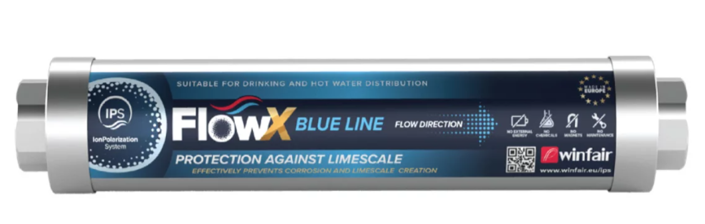
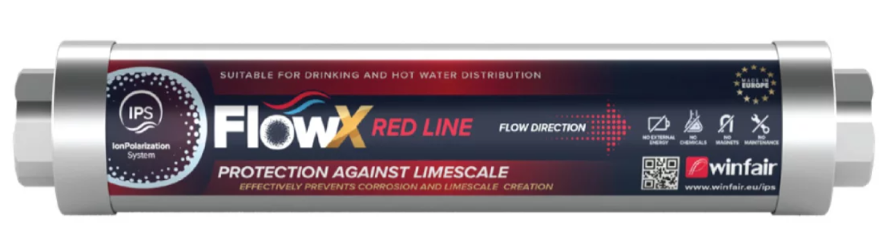
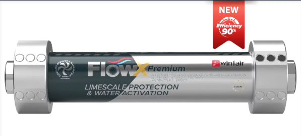

รุ่นสำหรับงานอุตสาหกรรม Flange Connection DN40–DN150 พร้อมตารางเปรียบเทียบและคำแนะนำการเลือกรุ่นIndustrial-grade Flange Connection units for DN40–DN150. Full comparison table and model selection guide included.
ผลิตภัณฑ์ทั้งหมดใช้เทคโนโลยี Turbulent Galvanic Polarization (TGP®) สิทธิบัตรสวิส ติดตั้งแล้วกว่า 80 ประเทศ QTEwater เป็นตัวแทนจำหน่ายอย่างเป็นทางการในประเทศไทย เรียนรู้เทคโนโลยี →All products use Turbulent Galvanic Polarization (TGP®) Swiss patent technology, deployed in 80+ countries. QTEwater is the authorized distributor in Thailand. Learn the technology →

Blue Lineรุ่นสำหรับอุตสาหกรรมขนาดกลาง รองรับ High-Flow ด้วย 3 TGP Coretubes เหมาะสำหรับระบบ Cooling Tower และ Heat Exchanger ขนาดกลางMid-size industrial model. High-flow capacity with 3 TGP Coretubes. Ideal for medium-scale Cooling Tower and Heat Exchanger systems.

Red Lineรุ่น Heavy Industrial สำหรับโรงงานขนาดใหญ่ รองรับท่อ DN150 และอัตราการไหลสูงถึง 60 m³/hr ด้วย 3–4 TGP CoretubesHeavy industrial model for large plants. Supports DN150 pipe and flow rates up to 60 m³/hr with 3–4 TGP Coretubes.

Premium Lineรุ่นพิเศษ Hybrid ผสม 4 TGP Coretubes + Linear Technology สำหรับระบบที่ต้องการ Pressure Drop ต่ำมาก ไม่เกิน 0.5 BarSpecial Hybrid model combining 4 TGP Coretubes and Linear Technology for systems requiring minimal pressure drop below 0.5 Bar.
| Model รุ่น | Picture รูปภาพ | Efficiency ประสิทธิภาพ | Patented สิทธิบัตร | Drinking & Cold การดื่มและความเย็น | Hot Water น้ำร้อน | Household ใช้ในครัวเรือน | SME SME | Industry อุตสาหกรรม | |
|---|---|---|---|---|---|---|---|---|---|
| FlowX Red Line FlowX รุ่น Red Line | 76% | ✔ | ✔ | ✖ | ✔ | 1/2", 3/4" | G1", 5/4", 6/4", 1½", 2" | DN40–DN150 | |
| FlowX Blue Line FlowX รุ่น Blue Line | 76% | ✔ | ✔ | ✔ | ✖ | 1/2", 3/4" | G1", 5/4", 6/4", 1½", 2" | DN40–DN150 | |
|
FlowX Premium Line
FlowX รุ่น Premium Line BEST |
90% | ✔ | ✔ | ✔ | ✔ | G1" | 1½", 2" | DN40–DN125 |
วัด Pipe Diameter ที่จุดติดตั้ง ถ้า DN40–DN125 เลือก Blue Line ถ้า DN125–DN150 เลือก Red Line ถ้า DN65 และต้องการ Low Pressure Drop เลือก HybridMeasure pipe diameter at installation point. DN40–DN125: Blue Line. DN125–DN150: Red Line. DN65 needing low pressure drop: Hybrid.
Blue Line รองรับ 8–25 m³/hr, Red Line รองรับ 8–60 m³/hr หาก Flow Rate สูง ให้เลือก Red Line เสมอ เพื่อประสิทธิภาพที่ดีที่สุดBlue Line handles 8–25 m³/hr, Red Line handles 8–60 m³/hr. For high flow rates, always choose Red Line for best performance.
ไม่แน่ใจ? ทีมวิศวกรของ QTEwater จะสำรวจหน้างานและแนะนำรุ่นที่เหมาะสมให้ฟรี ไม่มีค่าใช้จ่ายNot sure? QTEwater's engineers will survey your site and recommend the right model at no cost.